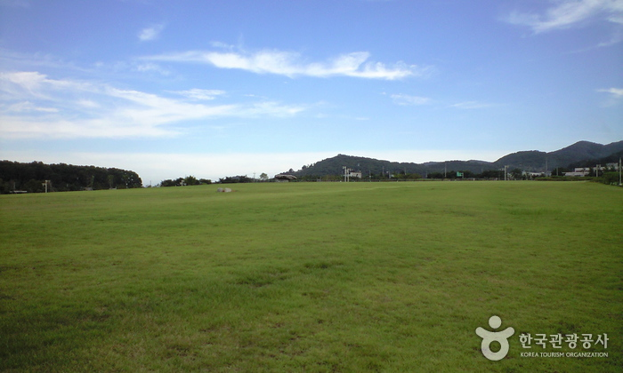
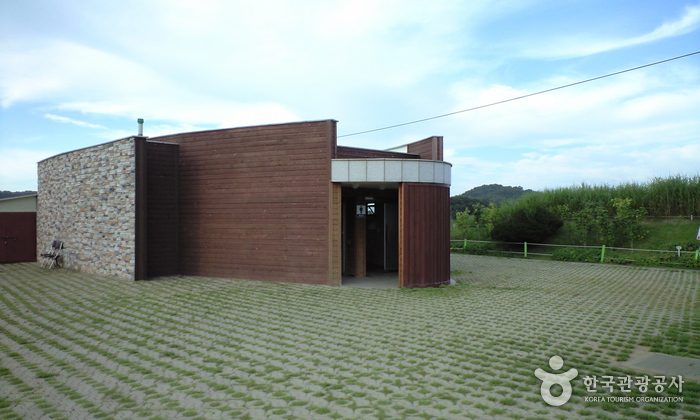
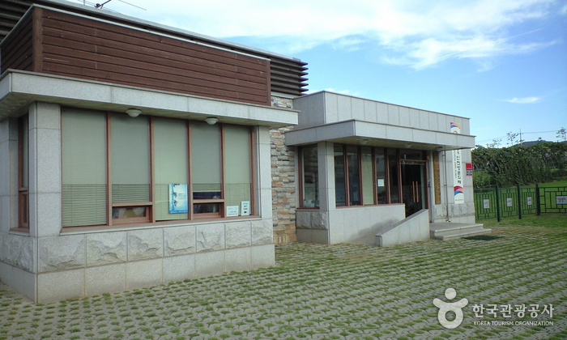
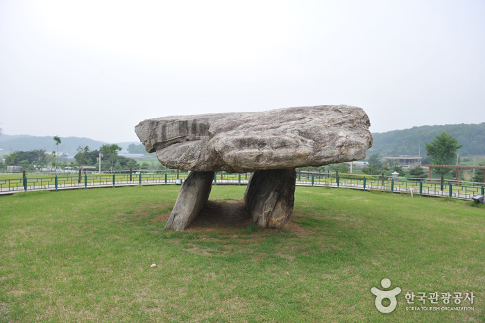

강화 고인돌 유적 [유네스코 세계문화유산]
   
지역 : 인천 인천
설명 : 세계문화유산인 다양한 고인돌을 구경하며 산책을 즐길 수 있는 유적지.
웹사이트 링크 1:
http://www.cha.go.kr/korea/heritage/search/Culresult_Db_View.jsp?mc=NS_04_03_01&VdkVgwKey=23,00440000,23
웹사이트 링크 2:
https://place.map.kakao.com/8173287
웹사이트 링크 3:
https://www.google.com/maps/place/%EA%B0%95%ED%99%94+%EB%B6%80%EA%B7%BC%EB%A6%AC+%EC%A7%80%EC%84%9D%EB%AC%98/@37.8291754,127.0709533,9z/data=!4m8!1m2!2m1!1z6rCV7ZmUIOqzoOyduOuPjCDsnKDsoIEgW-ycoOuEpOyKpOy9lCDshLjqs4TrrLjtmZTsnKDsgrBd!3m4!1s0x357c7aa082043273:0xfbcf22c24fa34737!8m2!3d37.7736539!4d126.4373081?hl=ko